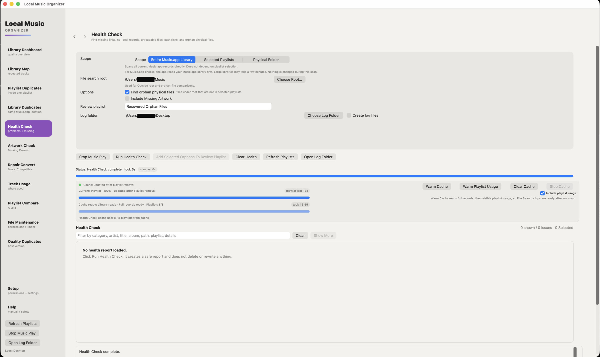

How to find missing music files in Music.app on Mac
Music.app may still show a track after its audio file has been moved. The library entry remains, but its saved file path is no longer valid. Before importing another copy, check whether the original file is still on your Mac or an external drive.
Check where the file went
If the music is on an external drive, connect it and confirm that Finder can open the folder. Also check whether the folder was renamed or moved. A missing Music.app link does not necessarily mean the audio file is gone.
- Open Library Dashboard in Local Music Organizer. Use Build / Refresh Library Index if this is the first scan. After smaller changes in Music.app, Refresh Music Changes is usually sufficient.
- Open Health Check, select the appropriate scope and run Run Health Check. Look at the Missing file results. Use Recheck to verify an individual result against the current file and Music.app state.
- If the file may have moved, use File Search to look through local or external folders you have authorized. You can reveal a possible match in Finder before changing the library link.
Repair the existing Music.app link
For one track, Repair Local Link... lets you choose the replacement file for the existing Music.app record. For a folder that has moved, Relink This Folder... asks for the new folder, previews relative-path matches and relinks the matching records. Neither operation moves, renames or deletes the actual audio files. The relink is checked against the record's Music.app Persistent ID.
Missing files and orphan files are not the same
Missing file means a Music.app record points to a local path that is unavailable. Orphan physical file means the file exists, but its exact path is not present in the saved Music.app library. An orphan is not necessarily damaged or unwanted. Compare the paths before deciding whether to relink an existing record or import anything new.
Remove Missing Record... is a separate action that removes the selected Music.app library record after confirmation; it does not delete an audio file. Check where the track is used before choosing it. The Health Check documentation and the illustrated user guide describe the available actions in detail.

Health Check displays the affected Music.app entries and lets you verify individual findings before acting.